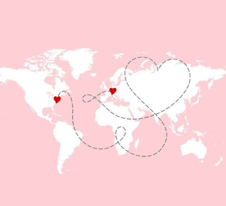

♥
UN PEQUEÑO UNIVERSO PARA TI
♥
Si pudiera regalarte algo...
Te Amo, Meel
DESLIZA PARA DESCUBRIR ↓
Pronto estaremos juntos ♡
No importa cuántos kilómetros nos separen, cada día falta menos para volver a verte.

♡ DOS CIUDADES, UN SENTIMIENTO ♡
De Lima a Huacho
Tal vez nos separen kilómetros, pero hay sentimientos que no conocen distancias.
Huacho
Un pedacito de nuestra historia
♥
Lima
Otro pedacito del mismo amor
♡ Unidos a pesar de la distancia
El mapa muestra ambas ciudades y una conexión simbólica entre ellas, no una ruta de carretera.
♥
MI LUGAR FAVORITO
No es un lugar... eres tú.
Y si tuviera que elegir entre miles de caminos, volvería a elegir aquel que me llevó a conocerte.
Nuestro álbum de recuerdos ♡